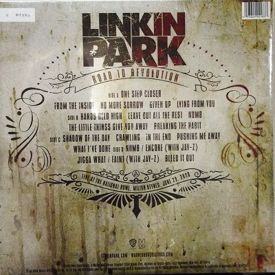
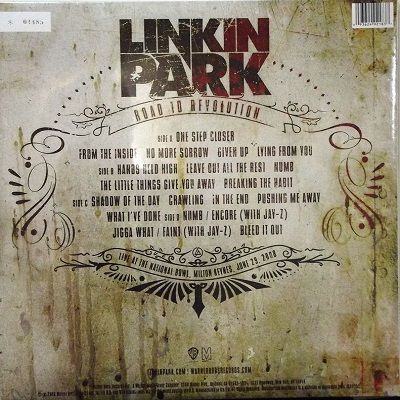

road to revolution
 

Lançamento: 20 de Novembro de 2008
Gravadora: Warner Bros. Records
Road to Revolution: Live at Milton Keynes é a segunda compilação ao vivo em CD/DVD/BD da banda de rock americana Linkin Park. Foi gravado durante a turnê anual do festival Projekt Revolution da banda no National Bowl em Milton Keynes em 29 de junho de 2008. Foi originalmente planejado para ser lançado em 25 de novembro de 2008, mas foi alterado para 24 de novembro. três dos álbuns da banda, bem como canções de seu EP, Collision Course with Jay-Z, e elementos de "Reanimation" e The Rising Tied de Fort Minor.
O show foi anunciado meses antes e promovido fortemente, possivelmente para ganhar o máximo de público possível para o lançamento de um DVD/CD e para competir com o popular Glastonbury Festival que aconteceu nos três dias anteriores. O show aconteceu em 29 de junho de 2008. Foi a primeira vez que o Projekt Revolution veio ao Reino Unido como parte do primeiro Projekt Revolution na Europa (os outros três shows aconteceram na Alemanha). Foi também a primeira vez que Linkin Park e Jay-Z colaboraram fora dos Estados Unidos. Como todos os shows do Projekt Revolution, várias bandas tocaram antes do Linkin Park; Innerpartysystem, The Bravery, Enter Shikari, N*E*R*D, Pendulum e Jay-Z (que executou um set solo completo, bem como sua colaboração com os headliners). Em muitos dos panfletos lançados pela banda e distribuídos pelo Linkin Park Street Team, no entanto, o HIM foi listado como se apresentando. Bennington disse à multidão que o show foi o maior show do Project Revolution até agora depois de "Points of Authority" e disse que foi o melhor dia de sua vida. Setlists anteriores indicavam que "Reading My Eyes" deveria ser tocada. "Dirt Off Your Shoulder/Lying from You" também deveria ser tocada, mas foi alterada para a regular "Lying from You". Além disso, "Bleed It Out" foi originalmente planejado para ser depois de "In the End" para encerrar o set principal, mas foi movido para o final do setlist para encerrar o show.
Durante "Jigga What/Faint" Shinoda erroneamente esqueceu de pegar sua guitarra a tempo, porém sua parte foi editada. No DVD, durante a performance de "Bleed It Out", Bennington e Shinoda se envolvem em uma "cantoria" com a multidão. , porém devido à duração do show, foi cortado do CD. (Os CDs só podem conter até 80 minutos). "Wake" também foi cortado do CD pelo mesmo motivo, em vez disso, o final desaparece do final de "No More Sorrow" para "Given Up". No total, 22 músicas foram tocadas no show, "Somewhere I Belong", "Papercut" e "Points of Authority" (que apresentava versos das canções do Fort Minor "Petrified" e "There They Go") aparecem no DVD como " conteúdo bônus" após os créditos.
músicas
- One Step Closer
- From the Inside
- No More Sorrow
- Wake 2.0
- Given Up
- Lying From You
- Hands Held High
- Leave Out All The Rest
- Numb
- The Little Things Give You Away
- Breaking the Habit
- Shadow of the Day
- Crawling
- In the End
- Pushing Me Away
- What I’ve Done
- Numb/Encore
- Jigga What/Faint